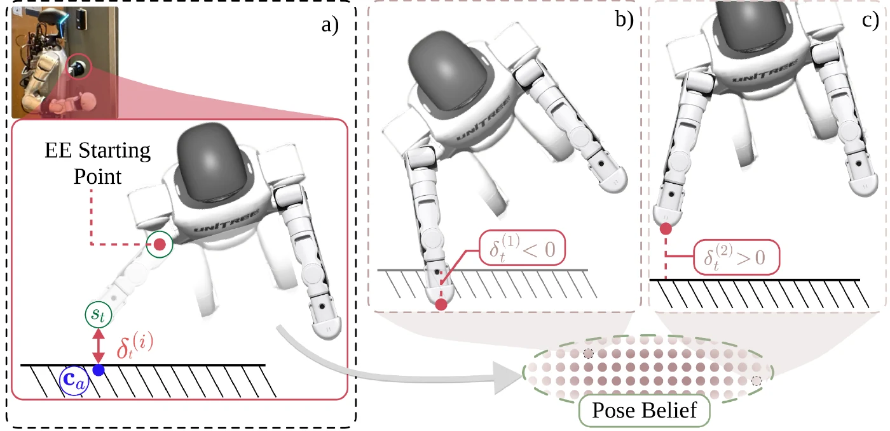
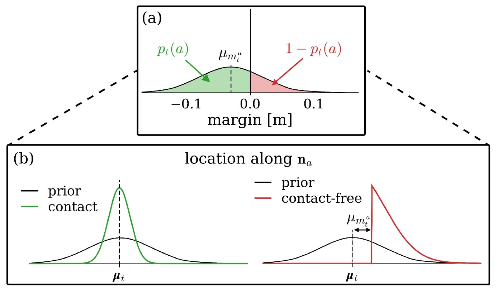

Anonymous project page
TAPNAV: Humanoid Navigation through Tactile Active Perception
Anonymous Institutions
Under Review · 2027

Abstract
Navigation in vision-denied environments is challenging for humanoid robots because proprioceptive odometry drifts and localization uncertainty accumulates rapidly. We present TAPNAV, a tactile active-perception framework that enables humanoid navigation toward a goal by actively probing surrounding structures without relying on vision. TAPNAV maintains a pose belief from odometry, IMU, and tactile contact observations, and couples uncertainty-aware global route planning with information-gain-driven local probing. The global planner searches for routes that keep predicted localization uncertainty bounded by exploiting opportunities for tactile correction, while the local planner selects probe actions that maximize expected information gain. A whole-body controller coordinates the humanoid's locomotion and end-effector contact to execute the planned navigation and probe motions. We evaluate TAPNAV in simulation and on a Unitree G1 across different floor plans and obstacle geometries. TAPNAV achieves lower state estimation error and a higher task completion rate than baselines. These results demonstrate that actively planning physical interactions with the environment can provide localization cues for reliable humanoid navigation without vision.
Vision-Denied Navigation
TAPNAV actively probes surrounding structures to localize and navigate toward a goal without relying on cameras or LiDAR.
Method
System Overview
TAPNAV localizes the robot on a known, static map using odometry, an IMU-based heading estimate, and tactile contact with mapped surfaces. A global route planner, local tactile action planner, pose estimator, and low-level controller jointly enable goal-directed navigation without vision.

Tactile Sensing and Contact Processing
Each end-effector integrates a TouchTronix SensX 160 tactile sensor covered by an Ecoflex 00-50 silicone pad. The tactile image is aggregated into a total activation, calibrated to an estimated normal force, and thresholded to produce the binary contact outcome used by the planner.

Belief-Space Tactile Navigation Planning
TAPNAV maintains an SE(2) pose belief with a particle filter. Odometry propagates pose hypotheses, while tactile and IMU observations correct accumulated drift. The global planner searches for a short route subject to position and heading uncertainty bounds, favoring mapped surfaces when tactile correction is needed.


Expected-Information-Gain-Driven Action Selection
At each subgoal, every candidate probe can produce either a contact or a contact-free observation. TAPNAV selects the action that maximizes the expected information gain over both outcomes, repeats probing on the updated belief, and proceeds when the maximum expected information gain falls below a threshold.
Low-Level Controller
To support frequent stop-and-go maneuvers while maintaining contact with the surroundings, TAPNAV learns a whole-body controller that tracks end-effector pose and force together with footstep placement.

Global Planner
Computes a collision-free route to the goal while keeping predicted pose uncertainty bounded. Route subgoals specify the next planar displacement and sensing location.
Local Planner
Generates end-effector probe candidates at each sensing location and chooses the action that maximizes expected information gain about the robot pose.
Experiments
We evaluate TAPNAV in MuJoCo simulation and on a Unitree G1 humanoid to examine uncertainty-bounded state estimation, low-level positioning accuracy, and integrated real-world navigation.
Simulation Results
Across four maps, TAPNAV maintains estimated trajectories close to the simulator ground truth. Contacts with different surface normals around corners and pillars provide complementary position constraints, while flat-wall contacts reduce uncertainty along the surface normal and can also reduce heading uncertainty.

Over 20 trials per map and method, TAPNAV achieves a 95% average success rate, compared with 77.5% for Random-touch, 38.8% for Sweep-touch, and 22.5% for Odometry-only, while producing lower position error and comparable yaw error.

Under increasing IMU heading noise, TAPNAV retains the lowest mean position and yaw errors and the highest success rate among the evaluated methods.
Low-Level Controller Accuracy
We compare TAPNAV's footstep controller with a velocity-tracking controller on a sequence of global planar torso targets. Heading errors accumulate under velocity tracking, while the footstep controller follows the target sequence with minimal drift.

Real-World Experiments
We deploy TAPNAV on a Unitree G1 with tactile end-effectors in an office hallway and a kitchen. The robot makes successive turns, navigates around the counter, and actively probes surfaces with different contact geometry while moving toward the goal.

Conclusion
TAPNAV integrates tactile active probing, belief-space localization, uncertainty-aware global planning, and whole-body control for vision-denied humanoid navigation. Simulation and hardware experiments demonstrate goal-directed navigation using tactile feedback, with improved navigation success and lower pose error than simulation baselines. The current system assumes a known static floor plan and a unimodal Gaussian approximation of the particle belief during planning.
BibTeX
@inproceedings{anonymous2027TAPNAV,
title = {TAPNAV: Humanoid Navigation through Tactile Active Perception},
author = {Anonymous Authors},
booktitle = {Under Review},
year = {2027}
}